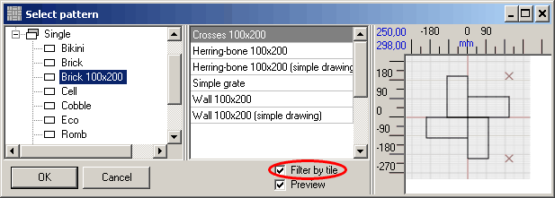
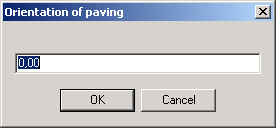

In the pop-up window you will see different types of tiles with patterns available. To preview patterns without opening them in the Patterns Editor, tick the "Preview" checkbox:
If you want to filter patterns by tiles, tick the "Filter by tile" checkbox to view patterns created with the help of a particular tile type.

After you press OK to confirm your choice, the chosen pattern will appear at the top left-hand corner of the project as a reminder.
|
Note. If you edit the pattern or tiles that form this pattern after you have added it to the project, you should select this pattern and add it to the project once again, otherwise the project won't be updated and will lose the changes.
|
You don't necessary need to pave tiles using axes, since you may want to use the preferred line (either drawn for the purpose of orientation or any side of the plot) as a reference point. To set the orientation of the pattern relative to horizontal axis counterclockwise, click the button.

|
Advice. Do not enter random values trying to fit the angle, just select (or draw) the line you will use as reference point and view its angle in the segment properties. To open segment properties, click |
Now we can pass to the next step - paving the plot.